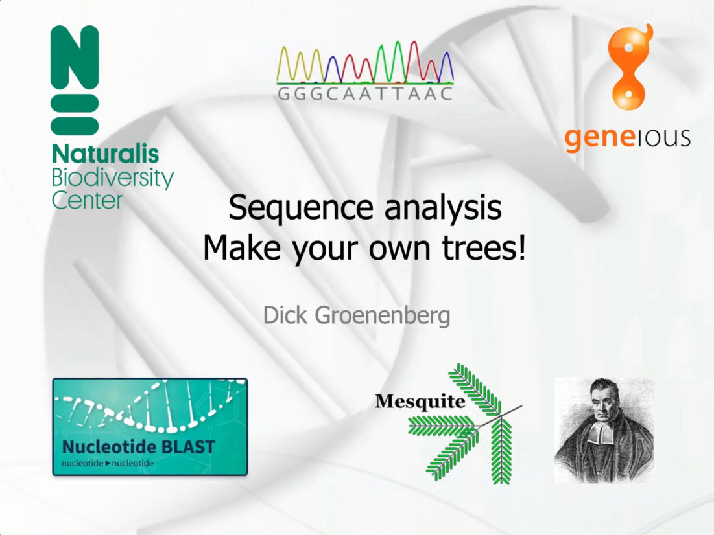
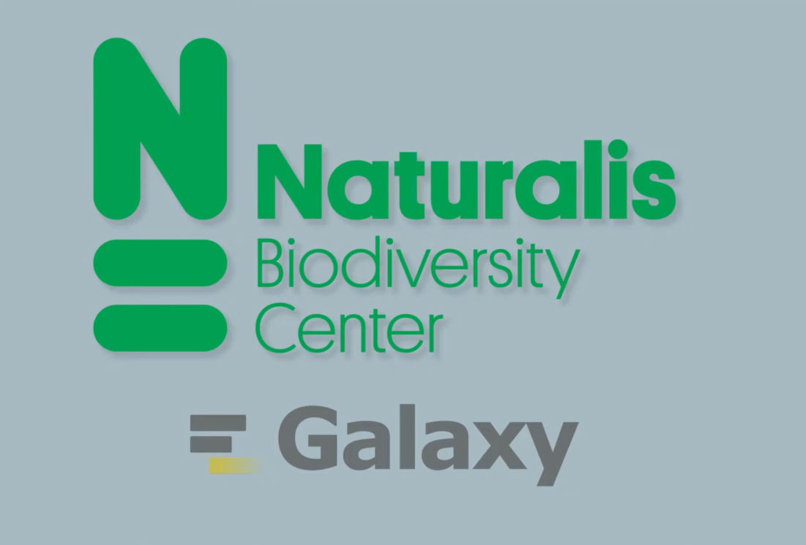

Free AI Website BuilderThis Github repository was created for the computer practicum of Evolutionary Biology 2 (BSc course Leiden university). These instructions
should enable the students to install the
software required for the phylogeny assignments
of the course.

Following the covid pandemic most lectures had to be given online. This video explains PCR, Dye terminator sequencing, tailed primers, sequence assembly (Geneious), BLAST, datamatrix creation, phylogeny reconstruction (MrBayes) and character tracing in Mesquite.

Galaxy is an open-source workflow management system designed to make data-intensive research accessible, reproducible, and transparent. It provides a browser-based interface where users can upload data, run analytical tools and workflows (requiring no programming skills). Mentioned workflows and even complete analysis histories can be shared.
Free AI Website Builder